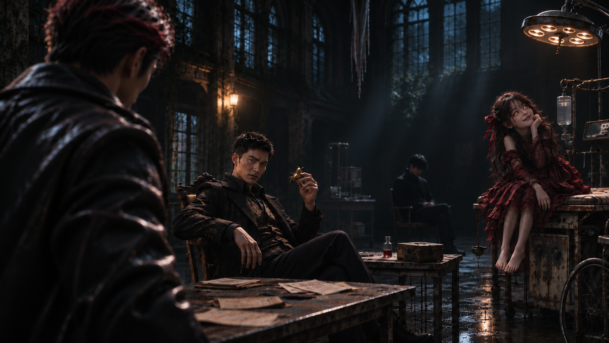
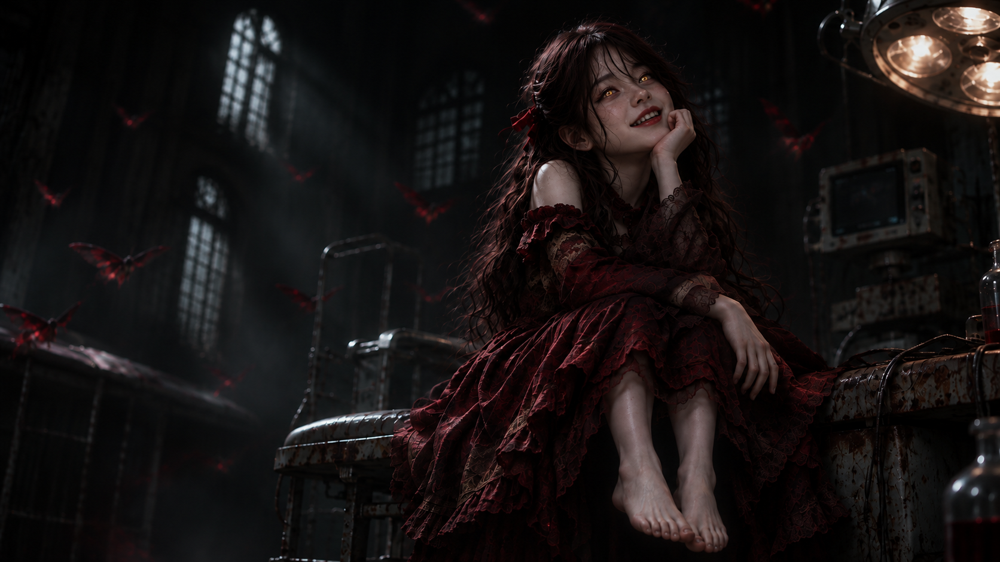
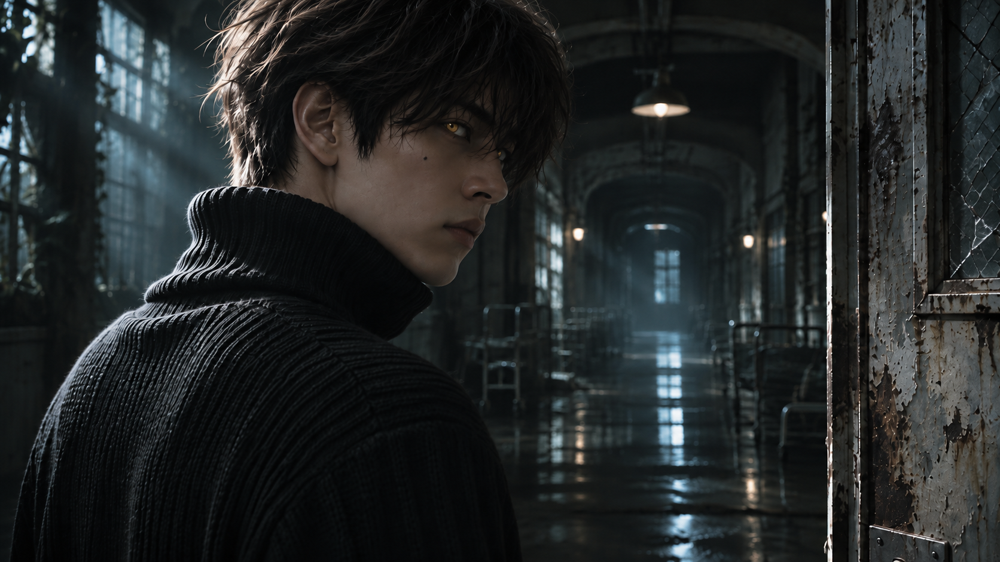
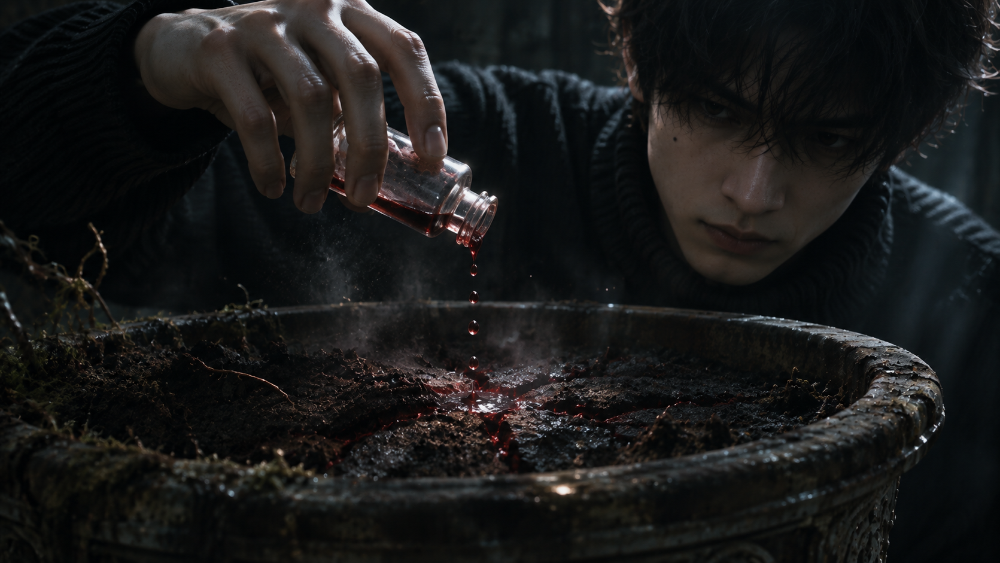
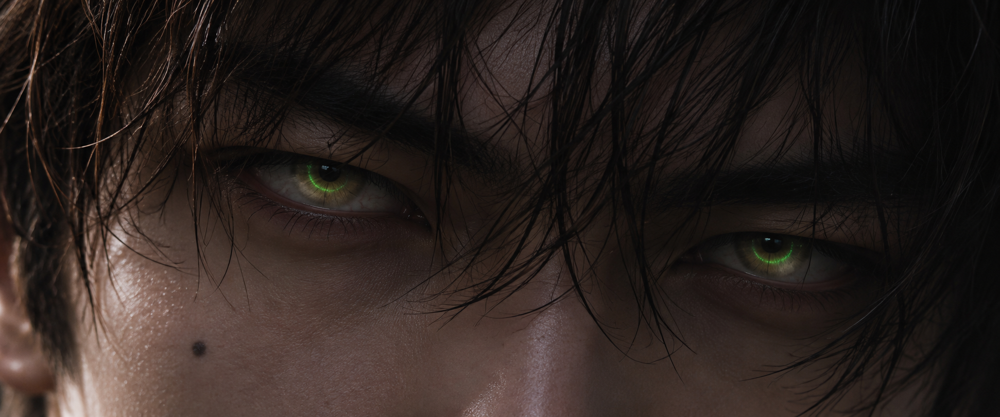

WHITE MAGIC ART STUDIO
後記
四魔君集結
陽明山深處・廢棄醫院
陽明山深處，一棟早已廢棄的醫院靜靜矗立在山林之間。
夜色籠罩著殘破的建築，藤蔓沿著龜裂的外牆攀爬，幾扇破碎的窗戶在風中發出細微的碰撞聲。

砰！
生鏽的鐵門猛然撞上牆壁。
炎君大步走進醫院，臉色陰沉得嚇人。
「真是煩死了……」
他的腳步聲迴盪在空蕩的走廊裡。空氣中瀰漫著霉味與腐朽的氣息，地上散落著破碎的玻璃、發黃的病歷紙，以及早已辨認不出用途的醫療器材。
穿過走廊，他來到醫院深處的大廳。
那裡，已經有三個人在等他。

「哎呦，阿豪啊。」
熟悉的聲音從前方傳來。
曾永華斜靠在一張破舊的桌旁，雙腿交疊，手裡把玩著一枚金色的甲蟲。
「怎麼這麼久才回來？我們都快以為你不來了。」
炎君沒有回答，只是冷冷瞪了他一眼。
「聽阿華說——」
另一道聲音突然插了進來。
「你不只沒搞定那三個玩木頭的，還被一個玩水的女人打得很慘？」
「噗哈哈哈哈！」
一陣毫不掩飾的笑聲響徹大廳。
說話的是一名身穿紅色衣裙的女孩。
她坐在一座廢棄的醫療儀器上，雙腳懸在半空中，隨著笑聲輕輕晃動。蒼白的肌膚在昏暗的光線下顯得格外醒目，深褐色的眼睛裡閃爍著惡作劇般的光芒。

她是四魔君之一——紅君。
「阿豪，要不要下次讓我的寶貝們陪你去呀？」
紅君歪著頭，露出甜美的笑容。
「至少牠們不會被水澆得那麼狼狽。」
「妳給我閉嘴！」
炎君怒吼一聲。
紅君卻笑得更加開心。
炎君懶得理會她，逕自走向桌旁，一屁股坐到永華對面。
「喂，曾永華。」
「嗯？」
「你到底在搞什麼？」
炎君雙手猛地拍上桌面。
「眼睜睜看著那個水之聖術師攻擊我，居然連出手都不出手？」
永華眨了眨眼。
「我以為你一個人就能應付啊。」
「你——！」
「再說了，」永華笑著攤開雙手，「我不是還有更重要的事情要做嗎？」
炎君額角的青筋微微跳動。
「你最好真的有。」
「當然。」
永華收起玩笑般的語氣，從外套口袋裡取出一只小巧的玻璃瓶。
瓶中盛著暗紅色的液體。
他將瓶子輕輕放在桌面上。
喀。

「畢竟，我們已經完成任務了。」
紅君原本晃動的雙腳停了下來。
她微微傾身，盯著那只玻璃瓶。
「這就是……種子？」
永華沒有立刻回答。
他只是伸出手指，輕輕轉動瓶身，望著裡頭緩緩流動的血液。
「至尊美麗但在哭泣的花朵啊……」
他低聲吟誦。
「你的第一顆種子，將成為我的核、我的心。」
大廳安靜了片刻。
「說起來，這句話還真是讓我費了不少心思。」
永華靠回椅背。
「一開始，我以為所謂的『至尊』，指的就是擁有『翼』身分的梁景皓。那麼，『第一顆種子』自然就是他的小兒子。」
「結果呢？」紅君問。
「結果，我發現自己可能想錯了。」
永華的嘴角微微上揚。
「當我得知梁景皓已經放棄『翼』的身分時，就開始懷疑……我們是不是從一開始，就誤解了『至尊』這個詞。」
炎君皺起眉頭。
「所以？」
「所以，我換了一個方式調查。」
永華的語氣輕描淡寫。
「我殺了張碧雲，借用她的模樣潛進梁景皓跟他兒子住的地方。原本只是想確認一些事情，沒想到，卻意外聽見了那對兄弟的談話。」
他停頓片刻，視線緩緩掃過眾人。
「然後，我終於想通了。」
「想通什麼？」紅君追問。
永華微微一笑。
「究竟有誰，真正有資格被稱為『至尊』？」
沒有人回答。
「不是翼聖術師，也不是任何一個人類。」
他的聲音漸漸低沉。
「而是那位……完美的神。」
炎君的神情微微一變。
紅君也收起了笑容。
「可是，」永華繼續說道，「別忘了，那位完美的神，還有一位兒子。」
「……拉比。」
炎君低聲接話。
「被稱為『神之子』的聖術師。」
「答對了。」
永華輕輕拍了拍手。
紅君卻露出疑惑的表情。
「等等，拉比？那個傳說中很厲害的聖術師？」
她歪著頭。
「可是，他不是早就不在人間了嗎？」
「確實如此。」
永華舉起玻璃瓶，讓瓶中的血液映著微弱的光。
「但他並不是什麼都沒有留下。」
紅君眨了眨眼。
「……翼？」
「沒錯。」
永華滿意地點頭。
「那些被稱為『翼』的聖術師，體內都承載著拉比所留下的力量——拉比之翼。」
他看著瓶中的血液。
「換句話說，『至尊之花』所指向的，或許並不是某個特定的人，而是與拉比有關的存在。」
「而所謂的『種子』……」
他輕輕晃動玻璃瓶。
「就是翼聖術師的血。」
紅君怔了一下。
隨即，她猛然睜大眼睛。
「等一下！」
她從儀器台上跳了下來。
「繞了這麼大一圈，那不還是梁景皓嗎？」
「是啊。」
永華笑了。
「最後還是回到了他身上。」
「那你剛才講那麼多幹嘛！」
「因為確認他是不是仍然保有『木翼』，可不是件容易的事。」
永華伸出一根手指。
「尤其是他自己都以為已經放棄那份力量的時候。」
炎君瞇起眼睛。
「所以你確認了？」
「當然。」
永華輕輕敲了敲桌面。
「幸好，我手上早就有他弟弟的血。」
炎君瞇起眼睛。
「你該不會……」
「沒錯。」
永華的嘴角揚起一抹得意的笑容。
「我假扮成梁景毅，成功取得了梁景皓的血。」
他舉起玻璃瓶，讓暗紅色的液體在昏暗的光線下緩緩晃動。
「這才是我們真正需要的東西。」
「哼，所以你就躲在旁邊看戲？」炎君冷冷地問。
「別這麼說嘛，阿豪。」
永華笑著擺了擺手。
「你可是幫了我不少忙呢。要不是你把那些聖術師的注意力都吸引過去，我哪有機會這麼順利？」
他說著，忽然轉頭看向紅君。
「啊，對了！還有妳。」
「嗯？」
紅君眨了眨眼，指了指自己。
「我？」
「當然是妳啊。」
永華笑得更加燦爛。
「妳派出的那些『血蛾惡魔』，可真是幫了大忙。」
紅君的眼睛頓時亮了起來。
「真的？」
「真的。牠們干擾梁景皓發現章碧雲屍體的時間，比我預期的還要久。多虧牠們，我才能有足夠的時間策劃我要如何確定梁景皓的身份，只不過蠻意外鄭老師竟然會干涉此事就對了....」
「但也罷，他反而讓我的計劃更加方便。」
永華晃了晃手中的玻璃瓶。
「反正這次能成功，妳的寶貝們可是功不可沒呢。」
「嘻嘻嘻！」
紅君開心地拍起手來。
「我就說嘛！我的寶貝們可厲害了！」
她笑得天真爛漫，彷彿剛剛聽見的不是一場精心策劃的襲擊，而是有人稱讚她養的寵物。
炎君看著兩人，忍不住翻了個白眼。
「一群瘋子……」
「哎呀，阿豪，你這樣說就太傷人了。」
永華故作委屈地攤開雙手。
炎君沒有理會他，只是將目光重新落在那瓶血液上。
片刻後，他忽然笑了。
「既然如此……」
他的語氣變得意味深長。
「『那位大人』應該會很高興吧？」
紅君緩緩轉過頭。
炎君的目光越過桌面，落在大廳另一端。
「畢竟，這可是為了我們的……」
他刻意放慢語速。
「樂園之花。」
接著，他咧嘴一笑。
「你說對吧，小聖？」
直到這時，眾人的注意力才真正落在那個始終沒有開口的男人身上。
他獨自坐在大廳中央偏暗的位置。
與其他三人不同，他從頭到尾都沒有參與爭論，也沒有對血瓶表現出任何興趣。
只是安靜地坐著。
彷彿眼前的一切，都與他毫無關係。
他是四魔君中的最後一位——
毒君。
「我說，毒君大人啊。」
紅君背著雙手，笑嘻嘻地走近他。
「我們為了對付你的家人，可是費了不少力氣耶。」
她彎下腰，試圖看清男人的表情。
「你就不能稱讚我們一下嗎？」
沒有回應。
「喂，小聖。」
炎君也開口了。
「至少說句話吧？」
毒君依舊沉默。
曾永華見狀，忍不住笑了出來。
「唉呀，真是冷淡。」
他拿起血瓶，朝毒君晃了晃。
「我們這麼辛苦才把東西帶回來，總該給點情緒價值吧？我們四個可是要好好想處的。」
這一次，男人終於動了。
他緩緩站起身，走向永華。
伸出手。
永華挑了挑眉，將血瓶遞給他。
毒君接過瓶子，轉身便走。
「……喂？」
永華愣了一下。
「就這樣？」
男人沒有停下。
「喂！我在跟你說話！」
依舊沒有回應。
永華終於提高音量。
「梁景聖！」
腳步聲戛然而止。
整座大廳彷彿也隨之安靜下來。
男人背對著眾人，停在走廊入口。
過了幾秒，他才緩緩側過臉。

「……請不要叫我那個名字。」
他的聲音很輕。
卻冷得令人不寒而慄。
昏暗的光線掠過他的側臉。
那張二十歲左右的臉，竟與梁景皓有著幾分驚人的相似。
相似的眉骨、輪廓，唯獨那枯葉褐色的眼睛不一樣。
只是其中沒有半分溫度。
「況且……」
毒君微微揚起嘴角。
「我沒有家人。」
說完，他轉過身，消失在走廊深處。
沒有人再叫住他。
只有紅君望著他的背影，輕輕吐了吐舌頭。
「真無情……」
永華卻只是笑了笑。
「是啊。」
他望向那條走廊。
「一直都是。」
廢棄醫院走廊通往許多空間。
毒君獨自向前走去一間狹長的房間裡。
腳步聲在狹長的空間中迴盪，兩側的牆面逐漸變得潮濕，空氣裡也開始混雜著某種難以形容的氣味。
像是藥水。
又像是腐爛的植物。
走到一半時，他聽見了聲音。
「……花……」
聲音很輕。
彷彿有人正貼著牆壁低語。
「……花開在血的湖畔……」
毒君沒有停下。
「……祂正在等……」
更多聲音從黑暗中傳來。
「聽見的人……」
「……將成為……」
「樂園的種子……」
鐵欄後方，一隻枯瘦的手突然伸了出來。
五根手指不自然地彎曲，指甲早已剝落，皮膚上布滿深色的斑痕。
緊接著，是第二隻。
第三隻。
鐵欄開始發出細微的震動。
毒君停下腳步。
走廊兩側，竟是一間又一間被鐵欄封住的病房。
裡面擠滿了人。
有些人蜷縮在角落，反覆念著無法理解的話語；有些人用額頭輕輕撞擊牆壁，像是在等待某個永遠不會到來的回應。
還有人早已面目全非。
殘破的身體上遍布異常增生的組織，原本屬於人類的輪廓幾乎無法辨認。
他們全都是狂魔症患者。

「……樂園……」
一名患者忽然抬起頭。
混濁的眼睛直直望向毒君。
「……花……要開了……」
毒君只是看了他一眼。
然後繼續向前。
隨著他的腳步遠去，病房裡的低語聲漸漸交疊。
「……種子……」
「……祂正在等……」
「……樂園……」
那些聲音越來越密集。
像是一群人正在誦讀同一段早已遺忘的禱詞。
終於，毒君走到了走廊盡頭。
那裡有一扇厚重的門。
他推門而入。
房間裡沒有病床，也沒有任何醫療器材。
只有一只巨大的盆栽，靜靜擺放在中央。
盆中的泥土呈現異樣的暗黑色。
表面乾裂，卻隱約散發著潮濕的氣息。
毒君走到盆栽前。
他低頭看著手中的玻璃瓶。
瓶裡的血液，在黑暗中呈現出深沉的暗紅色。
他旋開瓶蓋。
沒有猶豫。
將裡面的血液緩緩倒入泥土。
鮮血滲進土壤。

一滴。
兩滴。
直到最後一滴消失。
什麼都沒有發生。
毒君靜靜等待著。
幾秒後——
喀。
一聲極其細微的聲響，從盆栽深處傳來。
原本乾裂的土壤，忽然向上隆起了一點。
接著，又恢復平靜。
毒君微微瞇起眼睛。
下一瞬間。
喀……喀喀……
土壤開始震動。
一道裂縫緩緩向外延伸。
彷彿有什麼東西，正在泥土深處甦醒。
走廊另一端，那些狂魔症患者的低語聲，突然同時停止了。
整座醫院陷入死寂。
然後——
黑暗裡，傳來一個極其微弱的聲音。
「……樂園……」
泥土再次動了一下。
這一次，比剛才更加劇烈。
毒君低頭凝視著盆栽，他深褐色的虹膜，在陰影中閃出了一道綠光。
